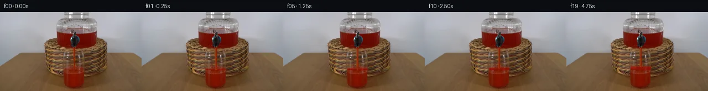

![首帧]()

Round 00
2026-11-05T02:17:22.094717+00:00像素候选变化代码 +184/−0inspection 更新
pixels d91b2e03deb40910 · code 6d8e78031e49fca7
查看本轮 generate.py 真实 diff
--- previous/generate.py +++ current/generate.py @@ -0,0 +1,184 @@ +#!/usr/bin/env python3 +"""Generate a restrained 20-frame continuation of the photographed pour. + +The source image is never geometrically transformed. For frames 01..19, only +the narrow jet and the top few rows of liquid in the receiving glass are +reconstructed. Output packing is delegated to artifact_io, which does not +generate pixels. +""" + +from pathlib import Path + +import cv2 +import numpy as np +from PIL import Image, ImageDraw + +from artifact_io import save + + +ROOT = Path(__file__).resolve().parent +HEIGHT, WIDTH = 144, 256 + + +def smoothstep(edge0, edge1, value): + value = np.asarray(value, dtype=np.float32) + x = np.clip((value - edge0) / (edge1 - edge0), 0.0, 1.0) + return x * x * (3.0 - 2.0 * x) + + +def blend_rgb(frame, target, alpha): + """Alpha blend an RGB target into a uint8 frame in place.""" + a = np.clip(alpha, 0.0, 1.0)[..., None] + mixed = frame.astype(np.float32) * (1.0 - a) + target * a + frame[:] = np.clip(np.rint(mixed), 0, 255).astype(np.uint8) + + +def make_stream_clean_plate(base): + """Numerically inpaint just the pre-existing red jet over basket texture.""" + red = base[:, :, 0].astype(np.int16) + green = base[:, :, 1].astype(np.int16) + blue = base[:, :, 2].astype(np.int16) + dominant_red = (red > 90) & (red > green * 2) & (red > blue * 2) + + region = np.zeros((HEIGHT, WIDTH), dtype=np.uint8) + region[65:98, 129:140] = dominant_red[65:98, 129:140].astype(np.uint8) + # Include antialiased red fringe but do not touch the reservoir or glass. + kernel = np.ones((3, 3), dtype=np.uint8) + region = cv2.dilate(region, kernel, iterations=1) + region[:65] = 0 + region[98:] = 0 + return cv2.inpaint(base, region, 3.0, cv2.INPAINT_TELEA) + + +def liquid_target_from_plate(plate): + """Red-tint local photographed texture instead of painting a flat fill.""" + p = plate.astype(np.float32) + luminance = 0.299 * p[:, :, 0] + 0.587 * p[:, :, 1] + 0.114 * p[:, :, 2] + target = np.empty_like(p) + target[:, :, 0] = 89.0 + 0.77 * luminance + target[:, :, 1] = 4.0 + 0.20 * luminance + target[:, :, 2] = 0.5 + 0.045 * luminance + return np.clip(target, 0, 255) + + +def render_frame(base, clean_plate, frame_index): + if frame_index == 0: + return base.copy() + + frame = clean_plate.copy() + yy, xx = np.mgrid[0:HEIGHT, 0:WIDTH].astype(np.float32) + progress = frame_index / 19.0 + phase = frame_index * 0.82 + + # The dense source liquid starts around row 104. A five-pixel rise is + # enough to communicate filling without overflowing the glass rim. + level = 104.0 - 5.0 * progress + distance = np.abs(xx - 134.0) + central_dimple = 0.82 * np.exp(-((xx - 134.0) / 2.25) ** 2) + ripple = 0.46 * np.sin(distance * 1.08 - phase) * np.exp(-distance / 12.0) + surface = level + central_dimple + ripple + + half_width = 18.6 + 0.025 * (yy - 99.0) + glass_interior = (distance < half_width) & (yy >= 96.0) & (yy <= 105.2) + below_surface = smoothstep(-0.55, 0.75, yy + 0.5 - surface) + side_softness = smoothstep(0.75, -0.20, distance - half_width) + fill_alpha = 0.84 * below_surface * side_softness * glass_interior + + red_texture = liquid_target_from_plate(base) … diff truncated; 97 more lines …